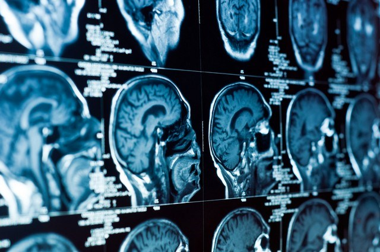

Cientistas criam cérebro em laboratório
O cérebro humano é o órgão mais complexo de todos e, em termos de conhecimento científico, pode-se dizer que ainda sabemos pouco sobre seu funcionamento. Recentemente, porém, um grupo de cientistas conseguiu uma façanha surpreendente: pela primeira vez, um cérebro humano foi criado em laboratório.
Parece roteiro de ficção científica, mas é verdade.De acordo com informações do The Independent, o órgão é uma espécie de miniatura, tem o tamanho de uma borrachadaquelas que são acopladas a alguns
lápis e contém 99% dos genes presentes no cérebro
de um feto humano,com uma estrutura já identificável.
A expectativa é a de que esse cérebro seja útil nos estudos
voltados a doenças degenerativas, como o Mal de Alzheimer e o Parkinson. Acredita-se também que a estrutura poderá servir como base para uma melhor compreensão a respeito do autismo.
De acordo com o professor Rene Anand,
que comanda o experimento com outros cientistas da Universidade Estadual de Ohio, a estrutura não apenas se parece com um cérebro em desenvolvimento.
Ela também tem as mesmas células e quase todos os genes contidos no cérebro humano.